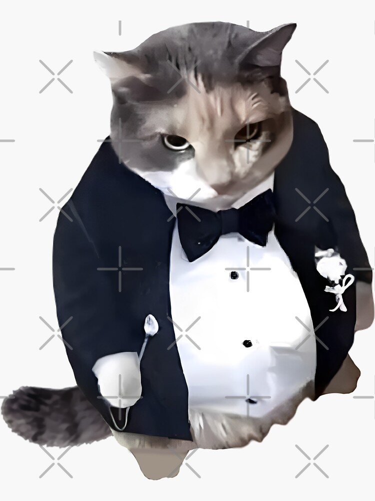

Brian Sanchez
Currently a Student in UWGB
Click here to visit my linked in profile!Here is a picture of my favorite Fat Cat from Google. 😀
| The Above Cat is Kind of Chubby. |
|---|
| Is it a female or male Cat? |
| Not really sure anymore! |
| I | Don't | Like | This | Cat! |
I'm passionate about learning as much as I can about the Computer Science field, especially anything relating to software engineering. I'm looking forward to learning more and remaining coachable.
Below you can find some of my Interests!